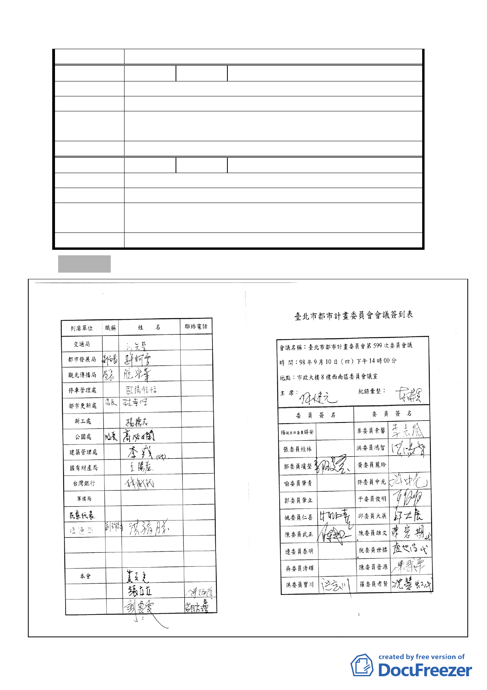

委 員會決 議 請都市設計委員會審查本案時整體審視。
編
號4
陳情人 戴金生
陳 情 理 由 本案之公車僅一線，請同意將停靠站牌移至昌隆公園。
建 議 辦 法 請移站牌。
擬建議處理
意見
請發展局說明
委 員會決 議 請都市設計委員會審查本案時整體審視。
編
號5
陳情人 葉金娥
陳 情 理 由 人行步道是否可綠化種植行道樹，以創造城市綠軸。
建議辦法
－
擬建議處理
意見
請發展局說明
委 員會決 議 請都市設計委員會審查本案時整體審視。
參、散會（17 時 50 分）。
- 27 -